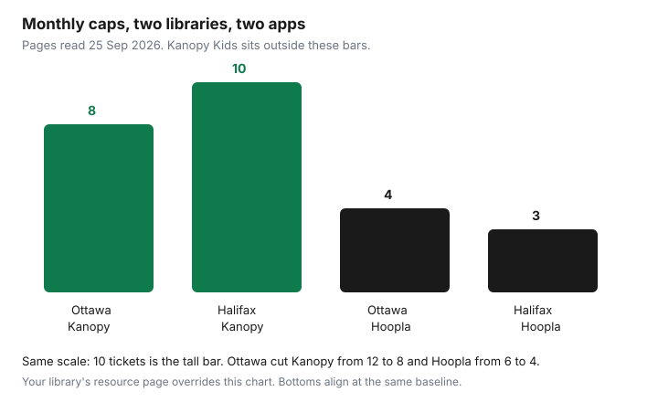

Subscriptions · Canada
Replace Paid Media with Your Canadian Library Card: PressReader, Kanopy, and Hoopla
A library card is a media subscription your taxes already touch. It is not unlimited Netflix, and it is not a live sports package. Used on purpose, PressReader, Kanopy, and Hoopla cover a slice of newspapers, movies, kids’ shows, albums, and audiobooks that households pay for again in separate apps. The caps are the library’s, they are monthly, and they changed recently in at least one big system. This page is the setup, the caps we could read on 25 Sep 2026, and a one-month test before the next streaming renewal. Cord-cutting and an Ignite TV plan are different decisions, on the internet-only guide and the Ignite TV comparison. The paid-streamer rotation is the streaming rotation.
Disclosure: This guide has no natural affiliate offer. Saving Optimizer does not claim a partnership with a library, PressReader, Kanopy, Hoopla, or a streamer. Education only. Your library’s card page is the cap.
Key takeaways
- Renew the municipal card and the PIN before you install the apps. A blocked card looks like a broken app. Ottawa’s Kanopy note says the service can block a card until membership is rechecked.
- Toronto’s PressReader help, read 25 Sep 2026: newspapers and magazines from many countries, hotspot access 48 hours on the library network and 72 hours otherwise, offline downloads need the app and a PressReader account. The Globe and Mail on that service is in-library computers and library wi-fi only.
- Kanopy is tickets. Ottawa lists 8 a month, down from 12. Halifax lists 10. Kanopy Kids is outside the ticket count on both pages. Hoopla is borrows: 4 a month in Ottawa, down from 6, and 3 in Halifax.
- Libraries do not replace live sports, the newest theatrical window, or a niche app. Run one library-first month before you renew a paid streamer.
- A neighbouring card is not a back door into another city’s Kanopy. Digital licences usually stay with the library that pays for them. Compare any non-resident fee with the subscription you hope to drop.
Get or renew a municipal library card and enable digital borrowing
Start with the card you already pay for through your municipality, not with a second city’s splash page. Check the expiry and the PIN. Most of these apps ask for the card number and the PIN the first time, and then they fail quietly when the card has lapsed. Ottawa’s Kanopy page says re-verification sometimes blocks the card until membership is checked, rather than simply asking for the PIN again the way Libby does. If Kanopy suddenly refuses you, renew the card before you reinstall the app.
Then turn on the services your branch actually buys. The usual set in a large Canadian city is Libby for ebooks and audiobooks, PressReader or a magazine app such as Flipster, Kanopy, and Hoopla. Not every library buys all four. The branch website’s digital list is the menu. Create the account on the library’s link, not on a random “sign in with Google” button on the vendor’s homepage, so the card is what authorizes the licence. Write the PIN in the household password note. A teen who cannot log in will go back to a paid app the same evening.
National Film Board films are the exception that does not need your municipal licence. Halifax’s page notes that the NFB has more than 14,000 works, with over 7,000 free to stream at nfb.ca. That collection is Canadian, it is not a blockbuster store, and it is a real evening. Use it in the library-first month.
PressReader / newspaper apps: borrow limits and offline reading
Toronto Public Library’s PressReader help, read 25 Sep 2026, is the clearest Canadian how-to we could read. The service carries newspapers and magazines from over 150 countries and over 60 languages. The help page names the Toronto Star, Toronto Sun, National Post, and the New York Times, plus magazines such as The Economist, Canadian Living, and Toronto Life. Most publishers allow issues for 90 days. You need a valid card. Reading in a browser does not require a PressReader account. Downloading for offline reading does: install the iOS or Android app, create a PressReader account, and sign in through the library first so the hotspot activates.
The hotspot is the limit, and it is time, not a stack of checkouts. On a library computer or the library’s wireless network, access is 48 hours. Otherwise it is 72 hours. When it expires, sign in again with the card and the PressReader account. There is no monthly issue cap in that help text. An August 2025 TPL handout PDF has said 30 days for off-site access. The HTML help page we read says 72 hours. Follow the page you sign in through. Do not plan a trip around the PDF if the live page says three days.
The Globe and Mail exception matters for anyone about to cancel a Globe subscription. TPL says the Globe on PressReader is only on library computers and the library’s wi-fi, and that going through tpl.ca does not provide it. At home on your own internet, PressReader may give you the Star and not the Globe. That is a reason some households keep one Globe digital sub and drop the others. It is not a reason to keep three news apps. The keep-one rule is the news subscriptions guide. While travelling, TPL says PressReader access continues outside Canada, with some titles unavailable because of licensing. Download before you board if the hotspot might lapse in the air.
Kanopy ticket systems and Hoopla borrows for movies and kids shows
Kanopy sells the library a ticket model. You see the ticket cost next to play, and a season of a show can be one ticket for the season rather than one per episode. Kids’ collections are the leak in a good direction. Ottawa says each card gets 8 tickets a month, reduced from 12 because of cost, and Kanopy Kids is not in the ticket system. Halifax says 10 tickets a month and unlimited Kanopy Kids plays. A children’s weekend can be Kanopy Kids plus one ticketed film, without touching a paid kids’ app. Burlington’s “save on streaming” post from 10 Nov 2022 described 10 plays a month. That post is old. Use the current resource page. Caps have already been cut in Ottawa.
Hoopla is a borrow count, instant, no holds. Ottawa: 4 titles a month, reduced from 6, movies and TV for 48 to 72 hours, albums for 7 days, comics for 21 days. Downloads are in the mobile app. A BingePass, where the library offers one, is one borrow for several days of a channel such as Curiosity Stream. Halifax: 3 Hoopla titles a month on the page we read. A household with two cards, two adults, has two caps. Do not share a PIN across the apps in a way that burns one card in a weekend. Data is yours: Ottawa’s note says a standard-definition movie is about 1 GB. On a capped rural internet plan, download on wi-fi.

| Service | Ottawa Public Library | Halifax Public Libraries | Kids |
|---|---|---|---|
| Kanopy | 8 tickets / month, cut from 12 | 10 tickets / month | Kanopy Kids outside the ticket count |
| Hoopla | 4 borrows / month, cut from 6. Albums 7 days. | 3 borrows / month | Kids’ titles count as borrows unless a BingePass says otherwise |
| PressReader | Not the page we used for a cap | Not listed on the movies and music page | TPL: time-based hotspot, not a monthly issue cap. Globe in-library only. |
What libraries do not replace (live sports, newest blockbusters, niche apps)
Write the gaps down before you cancel a streamer in triumph. Live sports are not on Kanopy or Hoopla. A Saturday night NHL or CFL habit still needs the broadcaster, a bar, or a paid sports add-on. The newest blockbusters are usually in a theatrical or first-pay window the library does not have. Kanopy’s strength, on the library descriptions, is independent, classic, documentary, and foreign film, plus some series, not the film that opened last Friday. Niche apps, a specific fitness programme, a language app, a cloud photo plan, are not hiding inside a library card. Apple Fitness+ and Adobe are those other guides, not this one.
Audiobooks have holds. Music is a handful of albums. Newspapers can miss the one title you want at home, as with the Globe on TPL’s PressReader. If the gap is one film a month, rent it or wait for the library copy and keep the card as the base. If the gap is the way the household watches four nights a week, keep one paid streamer on the rotation guide and let the card fill the other nights. Three paid streamers plus a library card you never open is the failure mode. The rotation guide’s cap, three paid video services overlapping for no more than 60 days, still applies. The library month is how you find out whether you needed the third one.
Build a library-first month before renewing paid streamers
Pick the next renewal, not a random Sunday. Seven days before that date, which is the same lead the audit guide uses, start a library-only stretch for video and magazines. Install the apps, borrow one Kanopy title, one Hoopla title, and one PressReader paper in the first weekend so the logins work. For the rest of the month, when someone asks to watch something, search the library apps first. Keep a note of misses: title, date, and whether you rented it, waited, or opened a paid app anyway.
At the renewal, read the note. All misses are sports or one new film: cancel or rotate the paid service and rent the film. Misses are most evenings: keep one paid service and put the renewal on the calendar again. Misses are “we forgot the PIN”: that is not a failed library, that is a setup problem. Fix it and run the month again before you pay another year. Do this before an annual plan renews. A monthly plan can be cancelled at the end of the library month. An annual plan that renewed yesterday waits a year. The date matters more than the enthusiasm.
Multi-city card tips if your region allows neighbouring-library access
Neighbouring-library access is usually about walking into a branch and borrowing a physical book. Digital licences are purchased by one library board for its own cardholders. A reciprocal sticker in your wallet often does not log into that city’s Kanopy, Hoopla, or PressReader. Ask the digital page, not the circulation desk’s “yes, we honour that card” answer. Those can both be true.
Some boards sell a non-resident card. Price it against the subscription you want to drop. A non-resident fee that costs more than a few months of the streamer is a bad trade, especially if the digital menu is thinner than your home library. Two cards in one household, when you genuinely qualify for both, are two Hoopla caps and two Kanopy ticket piles. That is useful. A card in a city you do not qualify for is not a savings trick, and it can be cancelled when the library checks the address. Use the card for the municipality on your mail. Use a second card only when the library’s own rules say you may, and only when the fee is lower than the apps it replaces.
Sources & date stamps
- Toronto Public Library, “Getting Started with PressReader,” read 25 Sep 2026: titles named above; Globe and Mail only on library computers and library wi-fi, not via the tpl.ca path; hotspot 48 hours on the library network and 72 hours otherwise; offline reading needs the app and a PressReader account; most back issues 90 days; access can continue outside Canada with licensing limits. An August 2025 TPL PDF has stated a longer off-site window. The HTML page is the one we followed.
- Ottawa Public Library Kanopy and Hoopla pages, read 25 Sep 2026: Kanopy 8 tickets, reduced from 12, Kanopy Kids at 0 tickets; Hoopla 4 borrows, reduced from 6; movie and TV loans 48 to 72 hours; albums 7 days; about 1 GB per standard-definition movie.
- Halifax Public Libraries movies and music page, read 25 Sep 2026: Hoopla 3 borrows a month; Kanopy 10 tickets; Kanopy Kids unlimited; Medici.tv; NFB, with over 7,000 works free at nfb.ca. Burlington Public Library, “Save on Streaming Services,” 10 Nov 2022, is an older 10-play description and was not used as a current cap.
Frequently asked questions
How many Kanopy movies do I get?
It depends on the library. Ottawa's page, read 25 Sep 2026, says 8 tickets a month, cut from 12, and Kanopy Kids does not use tickets. Halifax says 10 tickets and unlimited Kanopy Kids. Burlington's 2022 post is not a current cap.
How many Hoopla borrows?
Ottawa lists 4 a month, cut from 6. Movies and TV lend for 48 to 72 hours. Albums lend for 7 days and count as one item. Halifax lists 3 borrows a month. Two adult cards are two caps, if you each qualify.
Can I read the Globe and Mail on PressReader at home?
Not through Toronto Public Library's setup, on the help page read 25 Sep 2026. The Globe there is only on library computers and library wi-fi, and the tpl.ca path does not include it. The Star is named for ordinary PressReader access. Hotspot access is 48 hours on the library network and 72 hours otherwise.
Will the library replace Netflix and sports?
No. Live sports are not on Kanopy or Hoopla. The newest blockbusters are usually still in a window the library does not have. Use the card for documentaries, classics, kids' shows, and papers, and keep one paid streamer if the month of misses says you need it.
Can I use a neighbouring city's card for Kanopy?
Often no. Reciprocal borrowing is frequently in-person books. Digital licences stay with the library that pays for them. Price a non-resident card against the subscription you hope to drop before you buy one.